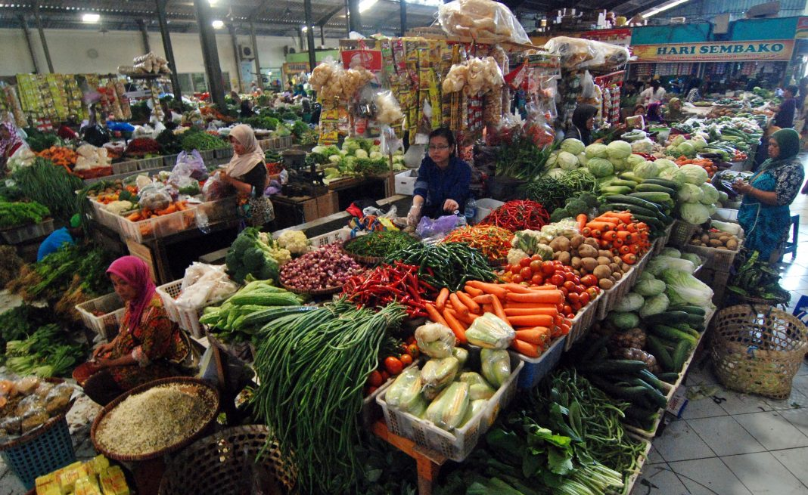

Cari Cluster terdekatmu

0.2 km
Lihat Lokasi
Produk terbaik di pasar ini:
Sayur Mayur, Ikan, Daging...

Pasar Kulakan Bringharjo
0.2 km
Lihat Lokasi
Produk terbaik di pasar ini:
Sayur Mayur, Ikan, Daging...
Pilih Lokasi Cluster

Pasar Gunungpati
Produk terbaik di pasar ini:
Sayur mayur, bumbu dapur, Ikan & daging segar.
Alamat:
Jln. Diponegoro, Karangayu,
Semarang
Pasar Gunungsari
Produk terbaik di pasar ini:
Sayur mayur, bumbu dapur, Ikan & daging segar.
Alamat:
Jln. Diponegoro, Karangayu,
Gunungsari
Pasar Wage
Produk terbaik di pasar ini:
Sayur mayur, bumbu dapur, Ikan & daging segar.
Alamat:
Jln. Diponegoro, Karangayu,
Wage